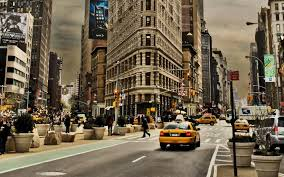

The city seen from the Queensboro Bridge is always the city seen for the
first time,in its first wild promise of all the mystery and beauty in the world.
F.Scott Fitzgerald
Here is a list of our favourite quotes about the New York skyline
I would give the greates sunset in the world for one sight of New York's skyline.
That skyline -- the apotheosis of New York's grace and swagger, creativity and hard labor -- is lovelier to me than the most serne sunset or snowcapped mountain range
There's a swell when you first see Manhattan. It's true, you think, the skyline is not a mirage, and you can be inside of it, naked in that gold lightJohn Weir, What I Did Wrong
For those of you who are interested in NYC slang, start talking notes below on these words that every New Yorker should know and learn.